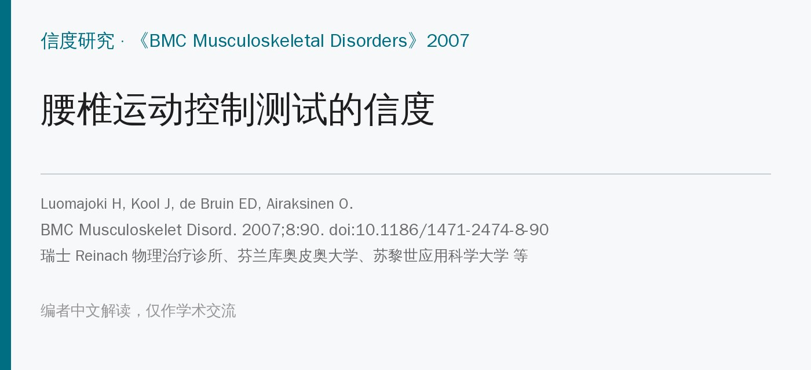
🔖原文信息（编者中文重排）
📚 文献信息
▪ Luomajoki H, Kool J, de Bruin ED, Airaksinen O. Reliability of movement control tests in the lumbar spine. BMC Musculoskeletal Disorders. 2007;8:90. doi:10.1186/1471-2474-8-90
▪ 作者单位：瑞士 Reinach 物理治疗诊所、芬兰库奥皮奥大学、苏黎世应用科学大学物理治疗研究所、苏黎世大学医院、苏黎世联邦理工学院
▪ 文章类型：信度研究（40 人的录像，4 名物理治疗师评分）
最多 90% 的腰痛属于“非特异性腰痛”，找不到明确的结构性原因。临床上常把其中一类人归为运动控制障碍：他们控制不好腰部的主动运动，在不知不觉中反复用“会诱发疼痛”的方式活动——O'Sullivan 称之为“疼痛诱发者”。
Sahrmann 的“相对柔韧性”理论也是类似思路：运动会走“阻力最小”的路径，比如髋屈曲比腰椎更僵，弯腰时就更多由腰来完成，久而久之出现屈曲相关的腰痛。
判断有没有运动控制障碍，主要靠看患者做主动动作。这些测试临床上很常用，但不同治疗师看同一个动作，结论一致吗？之前只有少数研究，而且大多是把病史、症状和动作放在一起判断，没有单独看每个测试。
• 对象：瑞士一家物理治疗诊所的 40 名患者：27 名非特异性腰痛、13 名因其他肌骨问题就诊、没有腰痛（让“做得好”的人也占一定比例）；平均 52 岁；排除急性腰痛和严重病理
• 录像：同一人按标准指令拍摄 10 项主动运动测试，每人约 10 分钟；穿内衣，能看清整个脊柱、髋和下肢，不露脸；指令听不懂可再讲解、示范一次，仍做错则按做错记
• 评分者：4 名物理治疗师，两两一组——资深组 2 人（工作 25 年、手法治疗研究生学历、熟悉运动控制评估），年轻组 2 人（工作 5 年，上过 3 天运动控制课程）；评分前由研究者讲解典型表现和评分标准
• 评分：只看录像、每段只看一遍，不知道诊断和病史，互不知情；每项判为“正确 / 不正确”；只有明显的运动控制障碍才判不正确，经指导能纠正的不算
• 测试者内信度：每组中 1 人隔 2 周再评一次同样的录像
• 统计：Kappa 值、一致百分比和 95% 置信区间；作者设定的“合格线”是测试者间、测试者内及两者平均的 Kappa 都 >0.4，且置信区间下限 >0.2
Kappa 解读（原文标准）：>0.80 很好，0.60～0.80 较好，0.40～0.60 中等（原文写“good”），0.20～0.40 一般，<0.20 差。Kappa 扣除了“碰巧一致”的部分，比单纯的一致百分比更严格。
测试来自 Sahrmann 和 O'Sullivan 的描述，分三类：屈曲控制 3 项、伸展控制 3 项、旋转控制 4 项（单腿站左右各算 1 项）。共同原则是：让四肢动，看腰能不能保持不动。
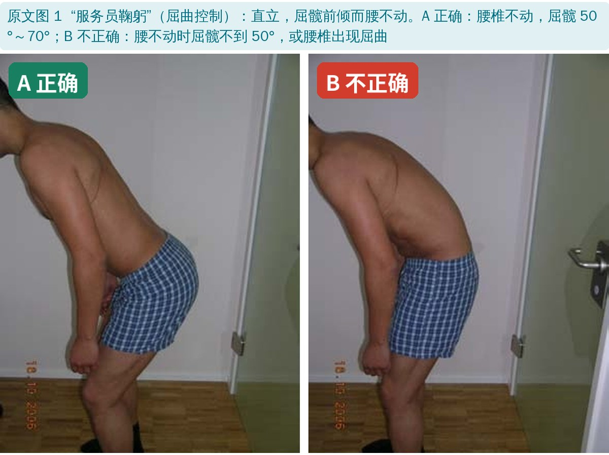
🔖① “服务员鞠躬”：屈髋 50°～70°，腰不能跟着弯
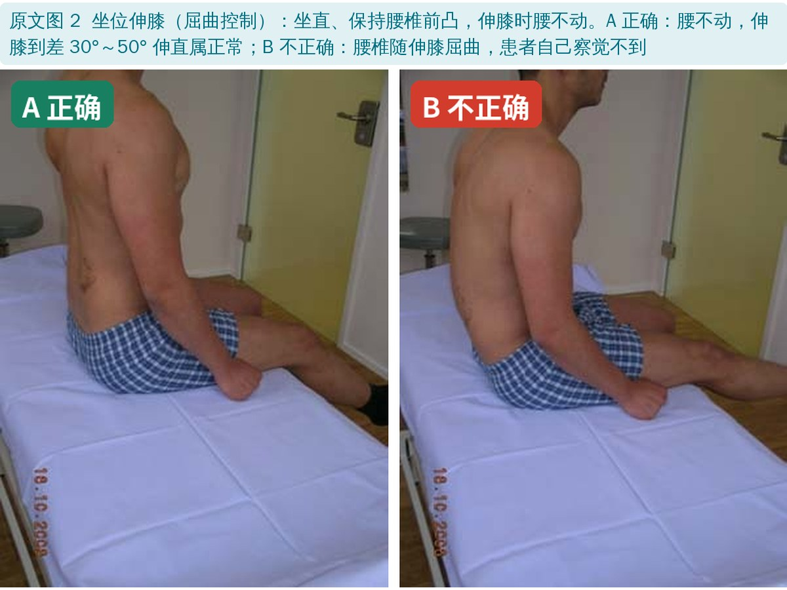
🔖② 坐位伸膝：保持腰椎前凸伸膝，腰不能往后塌
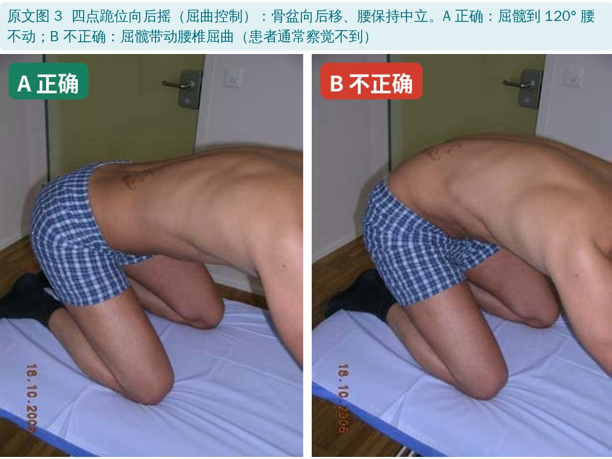
🔖③ 四点跪位向后摇：屈髋到 120°，腰不能弓起来
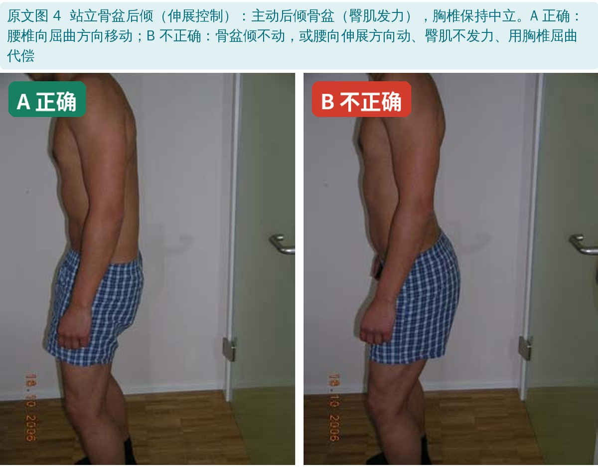
🔖④ 站立骨盆后倾：能主动后倾骨盆，用臀肌而不是胸椎代偿
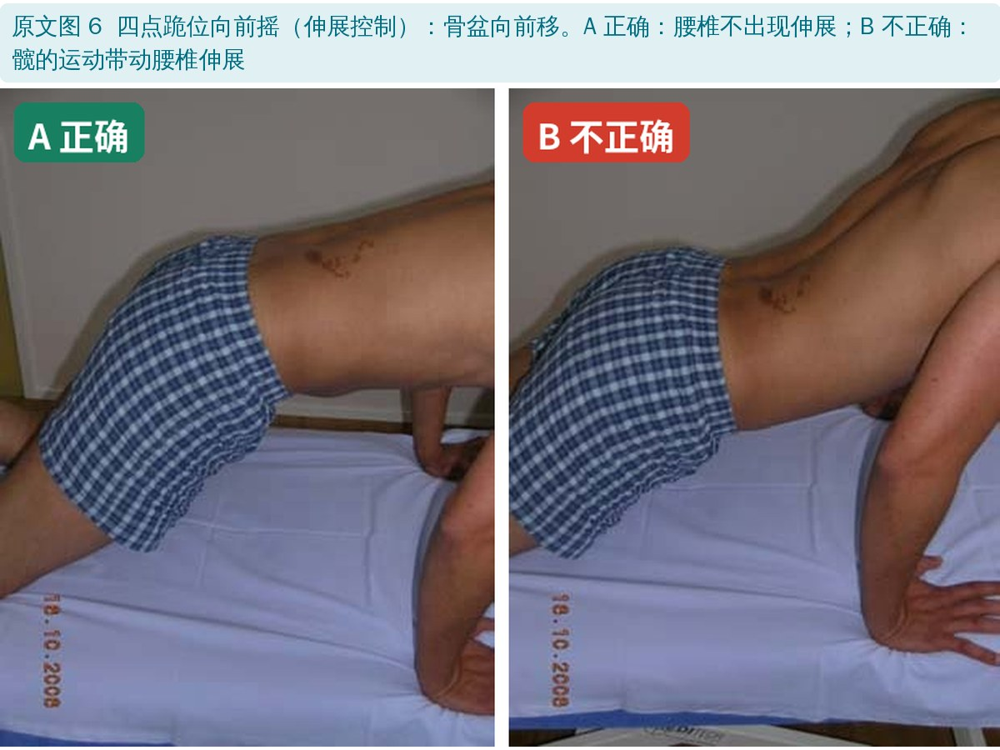
🔖⑤ 四点跪位向前摇：骨盆前移，腰不能塌成伸展
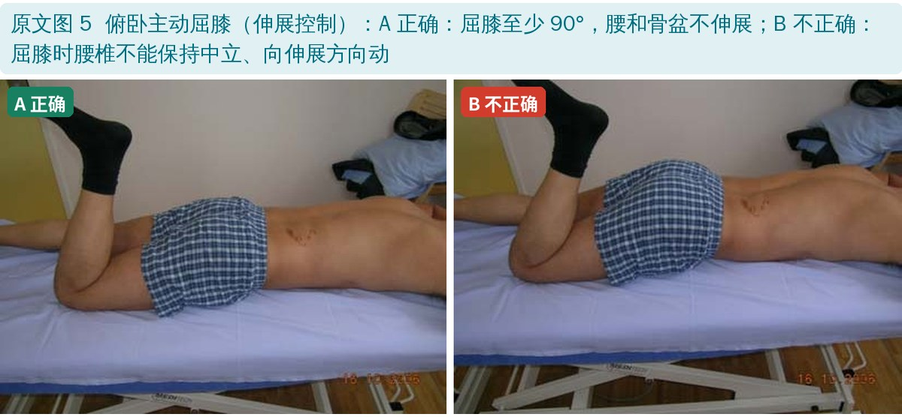
🔖⑥ 俯卧主动屈膝（看伸展）：屈膝 ≥90°，腰和骨盆不能往伸展方向动
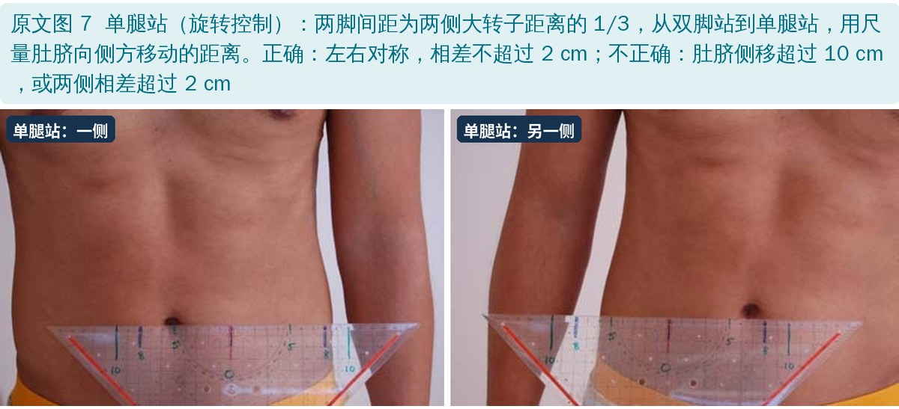
🔖⑦⑧ 单腿站（左、右）：肚脐侧移两侧对称，相差 ≤2 cm
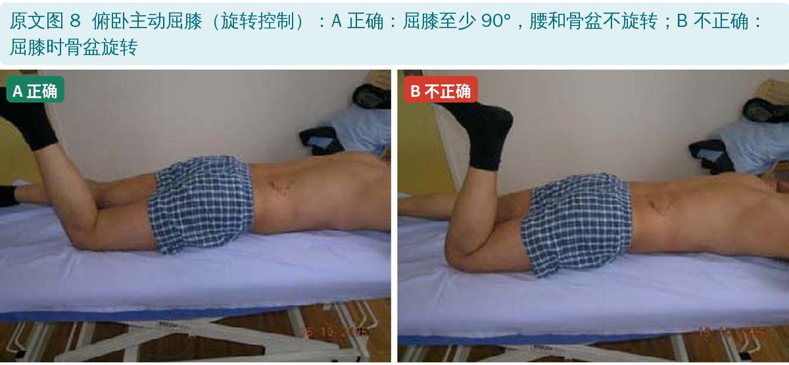
🔖⑨ 俯卧主动屈膝（看旋转）：屈膝 ≥90°，骨盆不能旋转
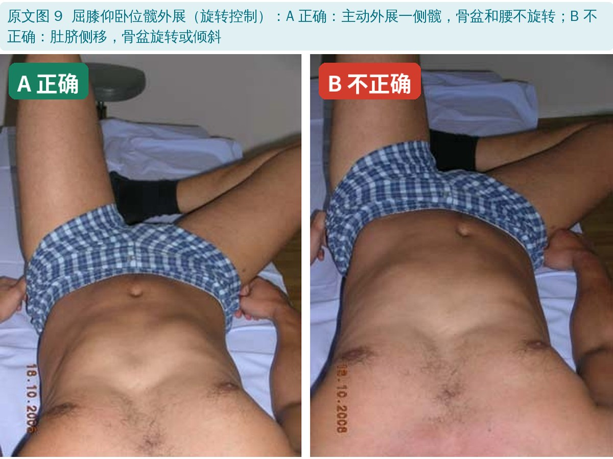
🔖⑩ 屈膝仰卧位髋外展：一侧髋外展时，骨盆不能旋转或倾斜
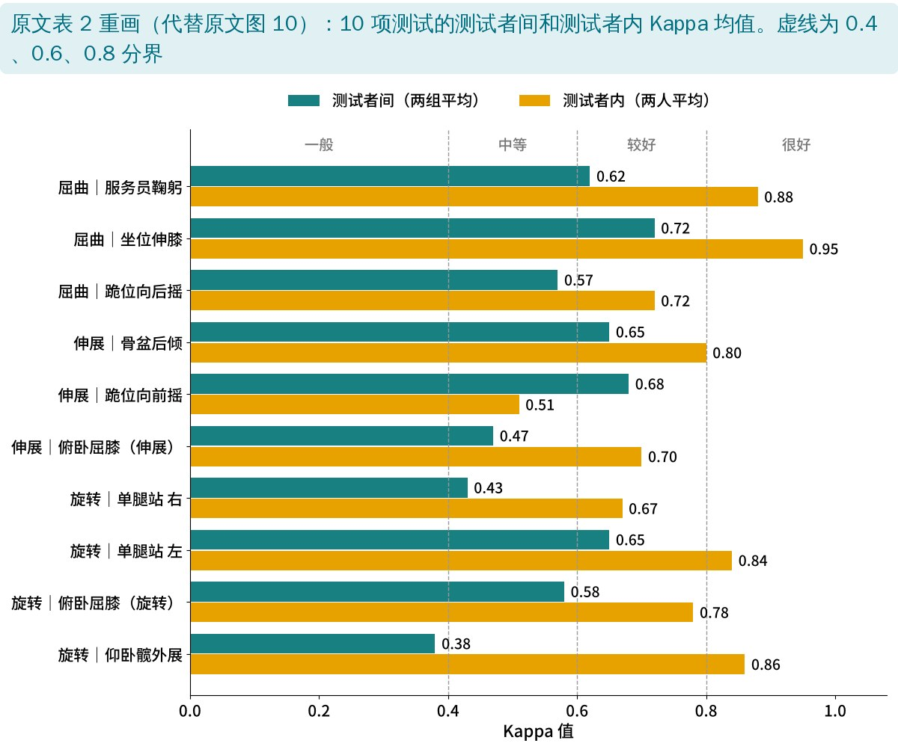
🔖10 项测试的信度（编者根据原文表 2 重画）
| 测试 | 测试者间：资深组 | 测试者间：年轻组 | 测试者内：评分者 1 | 测试者内：评分者 2 |
|---|---|---|---|---|
| 服务员鞠躬 | 0.71 | 0.52 | 0.75 | 1.0 |
| 骨盆后倾 | 0.60 | 0.70 | 0.80 | 0.80 |
| 单腿站 右 | 0.56 | 0.29 | 0.64 | 0.69 |
| 单腿站 左 | 0.70 | 0.80 | 0.67 | 1.0 |
| 坐位伸膝 | 0.80 | 0.64 | 1.0 | 0.90 |
| 跪位向后摇 | 0.68 | 0.45 | 0.73 | 0.70 |
| 跪位向前摇 | 0.66 | 0.69 | 0.22 | 0.80 |
| 俯卧屈膝（伸展） | 0.75 | 0.19 | 0.59 | 0.80 |
| 俯卧屈膝（旋转） | 0.62 | 0.54 | 0.60 | 0.95 |
| 仰卧髋外展 | 0.44 | 0.32 | 0.84 | 0.88 |
原文表 2：各测试的 Kappa 值（中文整理；红字为 <0.4）
• 测试者间：两组平均 Kappa 0.38～0.72；5 项 >0.6，4 项在 0.4～0.6，1 项 <0.4；一致百分比 65%～97.5%
• 测试者内：平均 Kappa 0.51～0.95，除 1 项外都 >0.6——同一个人前后评，比两个人互评更一致
• 最稳的：坐位伸膝、骨盆后倾、单腿站（左）、服务员鞠躬
• 最不稳的：屈膝仰卧位髋外展（两组都低，0.44 和 0.32）；俯卧屈膝（伸展）和跪位向前摇也要打问号
• 经验有用：资深组 10 项中有 8 项 Kappa ≥0.60，年轻组只有 4 项
• 腰痛患者平均有 3～4 项做不好，没有腰痛的人平均 1 项（作者未做进一步分析）
• 看的是录像，不是真人：评分者只看一遍、没有病史和症状信息，比临床更“纯”，但也更难；临床中能让患者重复、换角度看，结果可能不同
• 只回答“看得准不准”，没回答“有没有用”：信度不等于效度——这些测试能不能区分腰痛和非腰痛、能不能指导治疗，本研究没有回答
• 评分者少：每组只有 2 人，测试者内信度各只有 1 人，结论很大程度取决于这几个人
• 培训影响大：4 名评分者都说事先的标准培训还可以更充分；年轻组只上过 3 天课程
• Kappa 的“悖论”：做错的人很少时，一致百分比很高 Kappa 却可能很低。比如年轻组单腿站（右）一致率 97.5%，Kappa 只有 0.29
• 优点：测试简单、不需要设备、10 分钟做完；判定标准写得清楚（有角度、有距离）；评分者盲法设计
• 摘要和正文数字不一：摘要写测试者间 Kappa 0.24～0.71、6 项 >0.6；正文和表 2 是两组平均 0.38～0.72、5 项 >0.6，单组数值则在 0.19～0.80
• “全部 P<0.001”不对：结果写测试者内信度“全部 P<0.001”，但表 2 中评分者 1 的跪位向前摇 P＝0.16，并不显著；测试者间“除两项外 P<0.01”，表中其实有 3 项不满足（0.053、0.11、0.012）
• 一致率 100% 但 Kappa 不是 1：评分者 2 的单腿站（右）、跪位向前摇、俯卧屈膝（旋转）一致率都是 100%，Kappa 却是 0.69、0.8、0.95——两次评分完全一致时 Kappa 应为 1
• 一致百分比的分母对不上：资深组的 85.7%、92.8%、97.6%、78.6% 只能由 42 例算出（如 36/42），但只有 40 人
• 标准误和置信区间对不上：如评分者 2 俯卧屈膝（伸展）标准误 0.94、置信区间却只有 0.62～0.98；评分者 1 骨盆后倾标准误 0.01、置信区间却是 0.61～0.99；评分者 2 俯卧屈膝（旋转）置信区间 0.94～0.96 窄得不合理
• “最好的测试”前后不一：结果说两组都 >0.6 的是骨盆后倾、单腿站左、坐位伸膝和跪位向前摇；结论却把“服务员鞠躬”列为最好之一（年轻组只有 0.52），没提跪位向前摇
• 谁更稳：讨论说“经验少的人测试者内信度更高（全部 >0.69）”，但方法没交代评分者 1、2 分别是资深还是年轻的
• 样本量计算的写法有误：“α＝0.01、power [β＝0.80]”应为 1－β＝0.80；原假设和备择假设写反了
• 引用和图表编号：Kappa 分级标准引了文献 30（实为 Murphy 的髋伸展测试研究）；正文提到“表 5”，实际只有表 3；图 10 的分图标成“4a～4j”；图 5 和图 8 用了同一个标题；图 9 图注评分规则重复两遍
• 优先用信度较好的几项：坐位伸膝、服务员鞠躬（屈曲），骨盆后倾（伸展），单腿站（旋转）
• 同一位治疗师跟到底：测试者内信度明显好于测试者间，复评最好由同一人完成
• 先统一标准再评：只把“明显”的代偿判为不正确，经提示能纠正的不算；团队内最好先一起看录像对标准
• 看“腰能不能不动”：所有测试的核心都是四肢动、腰保持中立——这也可以直接转化为训练动作
• 这些测试只说明“看得比较一致”，要结合病史、疼痛行为和其他检查来判断是否属于运动控制障碍亚组
欢迎关注骨科康复小黄公众号，获取更多物理治疗的专业知识！
📄参考文献：
Luomajoki H, Kool J, de Bruin ED, Airaksinen O. Reliability of movement control tests in the lumbar spine. BMC Musculoskelet Disord. 2007;8:90. doi:10.1186/1471-2474-8-90
原文以 CC BY 2.0 协议开放获取，版权归原作者所有。本文为学术交流用的中文解读：原文图 1～9 引自原文，图中中文标签为编者所加；信度结果图根据原文表 2 重画，表格为中文翻译。如有侵权请联系删除。